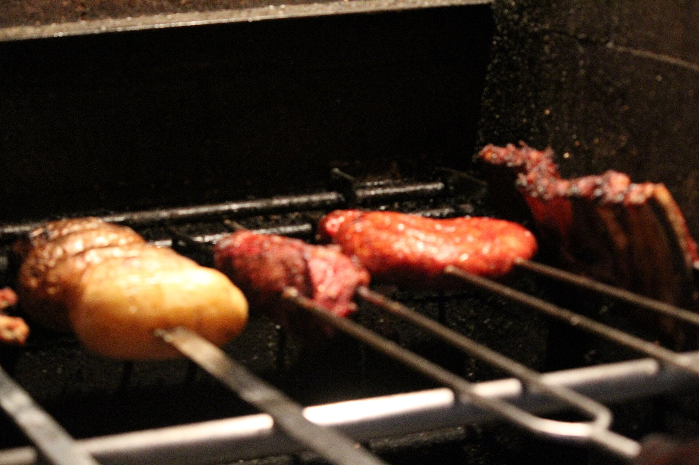
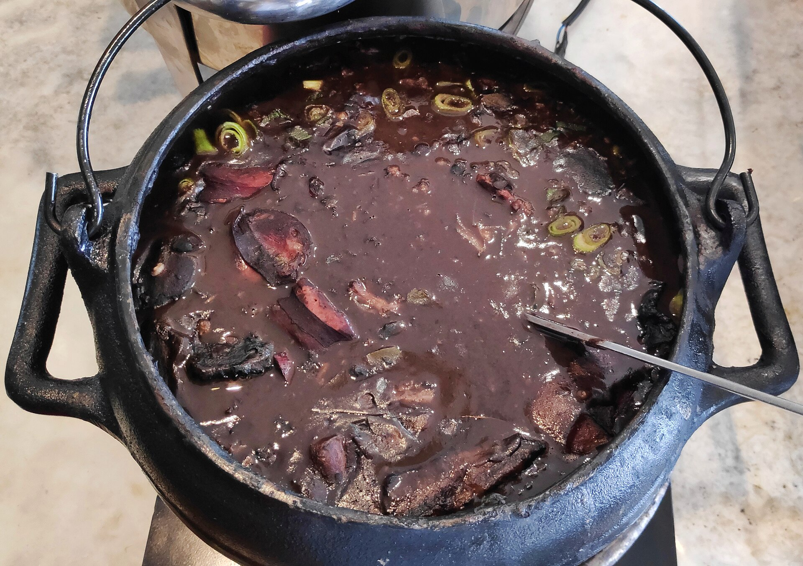
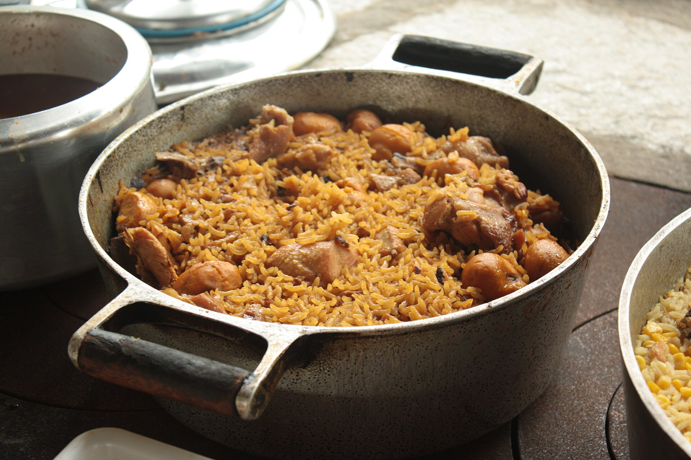
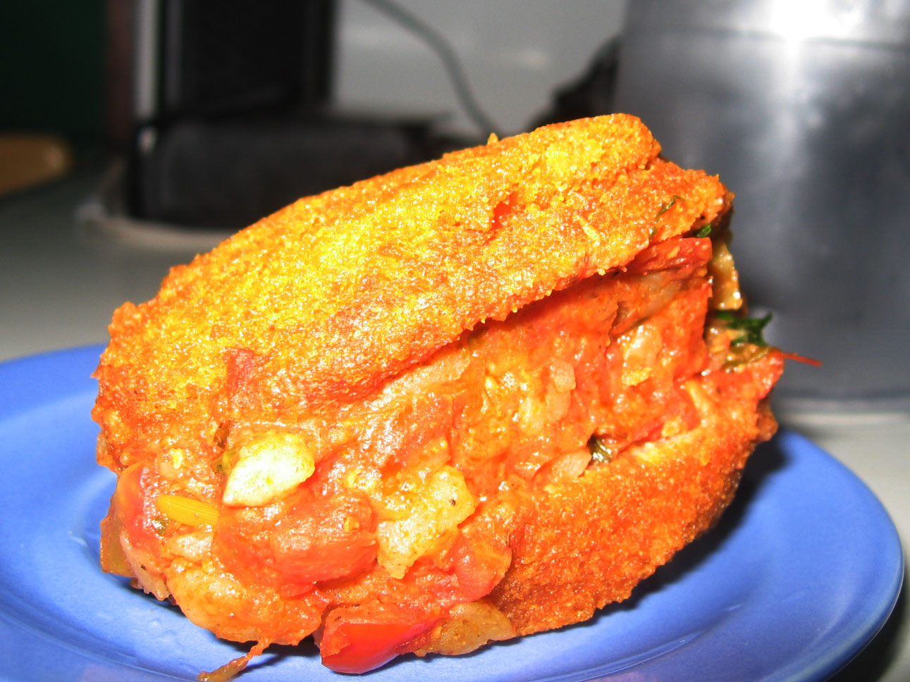
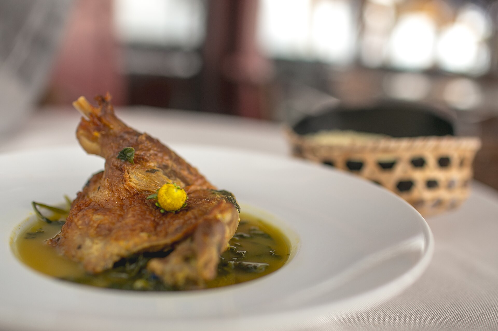

Brigadeiro
Docinho de leite condensado, chocolate em pó e manteiga, enrolado em bolinhas e coberto com granulado. É presença certa em festas de aniversário e comemorações.
Sabores do Brasil
A gastronomia brasileira nasceu do encontro entre ingredientes e saberes indígenas, africanos, portugueses e de imigrantes de várias partes do mundo. Mandioca, milho e frutas nativas se misturaram ao dendê, ao feijão e ao trigo, criando pratos que mudam de uma região para outra.
Por isso, comer no Brasil é também uma forma de conhecer a história e a diversidade de cada lugar.
Pratos típicos
Cinco pratos para conhecer o Brasil de região em região.

Região Sul
O churrasco é o prato mais associado ao Rio Grande do Sul. Cortes de carne bovina, como costela, picanha e fraldinha, são salgados com sal grosso e assados lentamente na brasa, em espetos longos. A tradição vem do modo de vida dos gaúchos e dos tropeiros nos campos da região. Costuma ser servido com arroz, farofa, salada de batata com maionese e pão de alho.

Região Sudeste
A feijoada é feita com feijão preto cozido lentamente com carnes de porco e embutidos, como linguiça, bacon e costelinha. É servida com arroz, couve refogada, farofa e laranja em fatias, e é presença marcante nos almoços de fim de semana no Rio de Janeiro. No Sudeste, Minas Gerais também se destaca com o pão de queijo, o tutu de feijão e o feijão-tropeiro.

Região Centro-Oeste
Típica de Goiás, a galinhada é um arroz cozido com pedaços de frango e temperado com açafrão-da-terra. Muitas vezes é servida com pequi, fruto do Cerrado de aroma forte e sabor marcante. O pequi aparece também em outros pratos da região, e o empadão goiano é outra receita muito conhecida.

Região Nordeste
Bolinho de massa de feijão-fradinho frito no azeite de dendê, o acarajé é um dos símbolos da culinária baiana. É aberto ao meio e recheado com vatapá, caruru, salada e camarão seco. De herança africana, é vendido pelas baianas nas ruas de Salvador, e o ofício das baianas de acarajé é reconhecido pelo IPHAN como patrimônio cultural imaterial.

Região Norte
Prato típico do Pará, leva pato cozido no tucupi, um caldo amarelo extraído da mandioca-brava, e folhas de jambu, que deixam a boca levemente dormente. É servido com arroz e farinha de mandioca e aparece com destaque no Círio de Nazaré, em Belém. A receita mostra a forte influência da culinária indígena.
Sobremesas
Três sobremesas que fazem parte das mesas brasileiras.
Docinho de leite condensado, chocolate em pó e manteiga, enrolado em bolinhas e coberto com granulado. É presença certa em festas de aniversário e comemorações.
Sobremesa cremosa feita com leite condensado, leite e ovos, assada em banho-maria e coberta com calda de caramelo. Está nos almoços de família e nos restaurantes de todo o país.
De cor amarela e brilhante, é feito com gemas, açúcar e coco ralado. A receita lembra os doces portugueses à base de ovos e é muito popular na Bahia e em todo o Brasil.
Bebidas
Três bebidas que o visitante encontra em qualquer região.
A bebida alcoólica mais famosa do país, feita com cachaça, limão, açúcar e gelo. A cachaça é destilada da cana-de-açúcar, e a caipirinha é servida em bares, quiosques de praia e festas.
O Brasil é o maior produtor de café do mundo. O cafezinho, servido forte em xícaras pequenas, é um gesto de hospitalidade em casas, padarias e escritórios.
Refrigerante feito com extrato de guaraná, fruta de origem amazônica cultivada há séculos por povos indígenas, como os Sateré-Mawé. Tem sabor adocicado e é muito consumido no país.
Continue explorando


.jpg){kind=link}